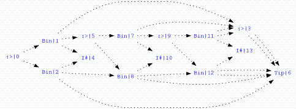

Recently, Sean Leather took up the idea of incremental folds. [1] [2]. At the end of his first article on the topic he made a comment on how this was a useful design pattern and sagely noted the advice of Jeremy Gibbons that design patterns are more effective as programs, while complaining of cut and paste coding issues.
The following attempts to address these concerns.
Below, I'm going to be using two libraries which I haven't mentioned on here before:
- My monoids library which contains among other things a large supply of monoids and the concept of a Reducer. A 'Reducer' is a monoid that knows how to inject values from another type. It also supports efficient left-to-right and right-to-left reduction, but we will be availing ourselves of neither of those extra faculties at the moment.
- The other library is reflection, which is a transcoding of Oleg Kiselyov and Chung-chieh Shan's incredibly elegant approach from "Functional Pearl: Implicit Configurations" updated slightly to work with the changes in GHC's implementation of ScopedTypeVariables since the article was written.
The source code for this post is available as Incremental.hs.
The 'monoids' and 'reflection' libraries are available from hackage.
{-# LANGUAGE
TypeOperators
, MultiParamTypeClasses
, FlexibleInstances
, FlexibleContexts
, UndecidableInstances
, ScopedTypeVariables
, GeneralizedNewtypeDeriving
#-}
module Incremental where
import Text.Show
import Text.Read
import Data.Reflection
import Data.Monoid.Reducer hiding (Sum,getSum,cons,ReducedBy(Reduction,getReduction))
[Edit: updated to hide a few more things from Data.Monoid.Reducer which now contains a 'ReducedBy' constructor, which serves a different purpose.]
I want to take a bit of a different tack than I did with 'category-extras' and define algebras and coalgebras as type classes.
class Functor f => Algebra f m where
phi :: f m -> m
class Functor f => Coalgebra f m where
psi :: m -> f m
This means that if you need to use a different Algebra, apply a newtype wrapper to the value m. We'll fix this requirement to some degree later on in this post.
Now, for every Functor, we can reduce it to ().
instance Functor f => Algebra f () where
phi _ = ()
And we can define the idea of an F-Algebra product
-- F-Algebra product
instance (Algebra f m, Algebra f n) => Algebra f (m,n) where
phi a = (phi (fmap fst a), phi (fmap snd a))
instance (Algebra f m, Algebra f n, Algebra f o)
=> Algebra f (m,n,o) where
phi a = (phi (fmap f a),phi (fmap g a),phi (fmap h a)) where
f (x,_,_) = x
g (_,y,_) = y
h (_,_,z) = z
and so on for larger tuples.
From there, the usual direction would be to define a fixpoint operator in one of several ways, so not to disappoint:
newtype Mu f = In (f (Mu f))
instance (Eq (f (Mu f))) => Eq (Mu f) where
In f == In g = f == g
instance (Ord (f (Mu f))) => Ord (Mu f) where
In f `compare` In g = f `compare` g
instance (Show (f (Mu f))) => Show (Mu f) where
showsPrec d (In f) = showParen (d > 10) $
showString "In " . showsPrec 11 f
instance (Read (f (Mu f))) => Read (Mu f) where
readPrec = parens . prec 10 $ do
Ident "In " < - lexP
f <- step readPrec
return (In f)
Now, we can define an Algebra and Coalgebra for getting into and out of this fixed point.
instance Functor f => Algebra f (Mu f) where
phi = In
instance Functor f => Coalgebra f (Mu f) where
psi (In x) = x
But our goal is an incremental fold without boilerplate. So I'd rather than the fixed point operator did the heavy lifting for me.
So lets define an alternative fixedpoint, in which we'll carry around an extra term for the result of applying the incremental Algebra so far.
data (f :> m) = f (f :> m) :> m
The much more categorically inclined members of the audience may recognize that immediately as the 'cofree' comonad of f from category-extras, and in fact we could continue on adding that definition, and turn it into a comonad for any Functor. I leave that as an exercise for the interested reader, but what we are interested in is the 'extract' operation of that comonad, which we'll just call value for now.
value :: (f :> m) -> m
value (_ :> m) = m
The particularly observant may further note that value itself is an (f :>)-algebra, since the 'extract' operation of any copointed functor f is just an f-algebra.
First, we add some boilerplate in the fashion of Mu f above.
instance (Eq m, Eq (f (f :> m))) => Eq (f :> m) where
f :> m == g :> n = f == g && m == n
f :> m /= g :> n = f /= g || m /= n
instance (Ord m, Ord (f (f :> m))) => Ord (f :> m) where
(f :> m) `compare` (g :> n) | a == EQ = m `compare` n
| otherwise = a
where a = f `compare` g
instance (Show m, Show (f (f :> m))) => Show (f :> m) where
showsPrec d (f :> m) = showParen (d > 9) $
showsPrec 10 f .
showString " :> " .
showsPrec 10 m
instance (Read m, Read (f (f :> m))) => Read (f :> m) where
readPrec = parens $ prec 9 $ do
f < - step readPrec
Symbol ":>" < - lexP
m <- step readPrec
return (f :> m)
and then we note that we can ask for the 'tail' of any cofree comonad as well, which gives us a more immediately useful coalgebra.
instance Functor f => Coalgebra f (f :> m) where
psi (x :> _) = x
And now, we come back to why we made algebras and coalgebras into a typeclass in the first place. We can define an algebra for how we propagate the information from another algebra that we want to incrementally apply to our functor f.
instance Algebra f m => Algebra f (f :> m) where
phi x = x :> phi (fmap value x)
We can give these convenient names so we don't get our phi's and psi's confused.
forget :: Functor f => (f :> m) -> f (f :> m)
forget = psi
remember :: Algebra f m => f (f :> m) -> f :> m
remember = phi
'forget' discards the wrapper which contains the result of having applied our algebra.
'remember' takes an f (f :> m) and adds a wrapper, which remembers the result of having applied our selected f-algebra with carrier m.
With these convenient aliases, we can define catamorphisms and anamorphisms over (f :> m).
cata :: Algebra f a => (f :> m) -> a
cata = phi . fmap cata . forget
ana :: (Algebra f m, Coalgebra f a) => a -> (f :> m)
ana = remember . fmap ana . psi
cata just forgets the wrapper, and applies an algebra recursively as usual.
On the other hand, our anamorphism now needs to know the algebra for the incremental fold, so that it can apply it as it builds up our new structure.
We can easily go back and forth between our two fixed point representations.
tag :: Algebra f m => Mu f -> (f :> m)
tag = remember . fmap tag . psi
untag :: Functor f => (f :> m) -> Mu f
untag = phi . fmap untag . forget
Now, with that machinery in hand, lets try to build a couple of examples, and then see if we can push the envelope a little further.
So lets define the binary tree that Sean has been using, except now as a base functor that we'll fold.
data Tree a r = Bin r a r | Tip
deriving (Eq,Ord,Show,Read)
instance Functor (Tree a) where
fmap f (Bin x a y) = Bin (f x) a (f y)
fmap _ Tip = Tip
As with Sean's code, we'll use a pair of smart constructors to build our tree, but note, we no longer have the unsightly and easily mistaken explicit algebra arguments. You can no longer mistakenly apply the wrong algebra!
bin :: Algebra (Tree a) m =>
(Tree a :> m) -> a -> (Tree a :> m) -> (Tree a :> m)
bin a v b = remember (Bin a v b)
tip :: Algebra (Tree a) m => (Tree a :> m)
tip = remember Tip
And, we'll need some data to play with, so lets define a nice generic looking tree.
testTree :: (Num a, Algebra (Tree a) m) => Tree a :> m
testTree = bin tip 2 (bin (bin tip 3 tip) 4 tip)
And while we're at it lets define a couple of algebras to try things out.
newtype Size = Size { getSize :: Int } deriving (Eq,Ord,Show,Read,Num)
instance Algebra (Tree a) Size where
phi (Bin x _ y) = x + 1 + y
phi Tip = 0
newtype Sum = Sum { getSum :: Int } deriving (Eq,Ord,Show,Read,Num)
instance Algebra (Tree Int) Sum where
phi (Bin x y z) = x + Sum y + z
phi Tip = 0
With those we can now rush off to ghci and give it a whirl.
*Incremental> testTree :: Tree Int :> Sum
Bin
(Tip :> Sum {getSum = 0})
2
(Bin
(Bin
(Tip :> Sum {getSum = 0})
3
(Tip :> Sum {getSum = 0})
:> Sum {getSum = 3}
)
4
(Tip :> Sum {getSum = 0})
:> Sum {getSum = 7}
) :> Sum {getSum = 9}
Note that each node in the tree is tagged with the accumulated result of our algebra.
Of course, since we also have an f-algebra with carrier Mu f, we can ask for that to be computed incrementally as well.
*Incremental> testTree :: Tree Int :> Mu (Tree Int)
Bin (Tip :> In Tip) 2 (Bin (Bin (Tip :> In Tip) 3 (Tip :> In Tip)
:> In (Bin (In Tip) 3 (In Tip))) 4 (Tip :> In Tip) :> In (Bin (In
(Bin (In Tip) 3 (In Tip))) 4 (In Tip))) :> In (Bin (In Tip) 2 (In
(Bin (In (Bin (In Tip) 3 (In Tip))) 4 (In Tip))))
Of course, this prints very poorly, but shares heavily as you can see below thanks to vacuum by Matt Morrow.

Now, defining Sum, and Size manually may be all well and good, and its sure a lot less work than it was before, but we can also just decide to lift almost any Monoid into an f-Algebra. Here is where we need the 'Reducer' concept from 'monoids' that was mentioned earlier.
newtype Mon m = Mon { getMon :: m } deriving (Eq,Ord,Show,Read,Monoid)
instance (a `Reducer` m) => Algebra (Tree a) (Mon m) where
phi (Bin x v y) = x `mappend` Mon (unit v) `mappend` y
phi Tip = mempty
-- where unit :: (a `Reducer`m) => a -> m
Of course, we're not limited to trees.
data List a r = Cons a r | Nil
deriving (Eq,Ord,Show,Read)
instance Functor (List a) where
fmap f (Cons a x) = Cons a (f x)
fmap _ Nil = Nil
instance Algebra (List a) Size where
phi (Cons _ xs) = 1 + xs
phi Nil = 0
instance Algebra (List Int) Sum where
phi (Cons x xs) = fromIntegral x + xs
phi Nil = 0
instance (a `Reducer` m) => Algebra (List a) (Mon m) where
phi (Cons x xs) = Mon (unit x) `mappend` xs
phi Nil = mempty
cons :: Algebra (List a) m => a -> (List a :> m) -> (List a :> m)
cons a b = remember (Cons a b)
nil :: Algebra (List a) m => List a :> m
nil = remember Nil
testList :: (Num a, Algebra (List a) m) => List a :> m
testList = cons 2 . cons 5 . cons 8 $ cons 27 nil
But now we're at a bit of an impasse. How do you deal with f-algebras that use some environment? When writing these out by hand, if a particular algebra uses a variable that is in scope it just closes over it in its environment. Giving a reference to the carrier for the algebra permits the abstraction to leak, and most likely requires you to regress to a smart constructor approach in which you package up that extra information by hand.
Since we package up the algebra in a type class, we seem, at first glance to have lost the ability to access an environment. After all a 'benefit' of the looser types permitted by Sean's post was that he could build values using an arbitrary algebra, just using any old pair of functions.
One useful example that would seem at first glance to be ruled out is the following. Every different filter function would have to be a different algebra!
filter_phi ::
Algebra (List a) m =>
(a -> Bool) ->
List a (List a :> m) -> List a :> m
filter_phi p Nil = nil
filter_phi p (Cons a as)
| p a = cons a as
| otherwise = as
So, lets do just that. We need to be able to reify an arbitrary function from a term into a type and we can do this with Data.Reflection! For the technical details, please read Oleg and Chung-chieh's very elegant functional pearl, but the idea is that by carefully abusing the ability to convert a list of integers into a type, we can convert a stable pointer into a type and share it in a limited context. In this case, that stable pointer can point to our particular algebra, environment and all, and yet we can be sure that the user doesn't try to mix incremental folds that use different environments.
To do this, we need a phantom type parameter in the carrier for our f-algebra.
newtype (a `ReducedBy` s) = Reduction { getReduction :: a }
and to reflect the function back down from the type level in our f-algebra.
instance (Functor f, s `Reflects` (f a -> a)) =>
Algebra f (a `ReducedBy` s) where
phi = Reduction . reflect (undefined :: s) . fmap getReduction
With that we can define any f-algebra that needs context, by reflecting it into the type system. The rank-2 type protects us from trying to put together data structures that were constructed using different algebras.
So now we can now apply this particular algebra to filter a list incrementally build up a list which incrementally builds itself in the [Int] monoid and tracks its length. Here we'll filter the list from earlier for even numbers and apply these other incremental operations all in one go. It reads a little more naturally if broken into parts, but we can write this all in one go.
test :: List Int :> (Mon [Int],Size)
test = reify
(filter_phi (\x -> x `mod` 2 == 0))
(\\(_ :: s) ->
getReduction (
value (
testList :: List Int :>
((List Int :> (Mon [Int],Size)) `ReducedBy` s))))
Which we can test out:
*Incremental> test
Cons 2 (
Cons 8 (
Nil :> (Mon {getMon = []},Size {getSize = 0})
) :> (Mon {getMon = [8]},Size {getSize = 1})
) :> (Mon {getMon = [2,8]},Size {getSize = 2})
And there you have an incremental fold upon reflection.
[Incremental.hs]
[Data/Reflection.hs]
[Data/Monoid/Reducer.hs]